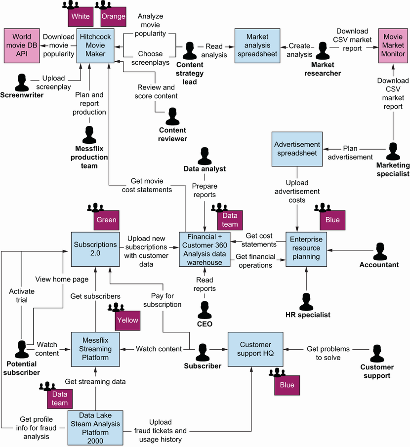
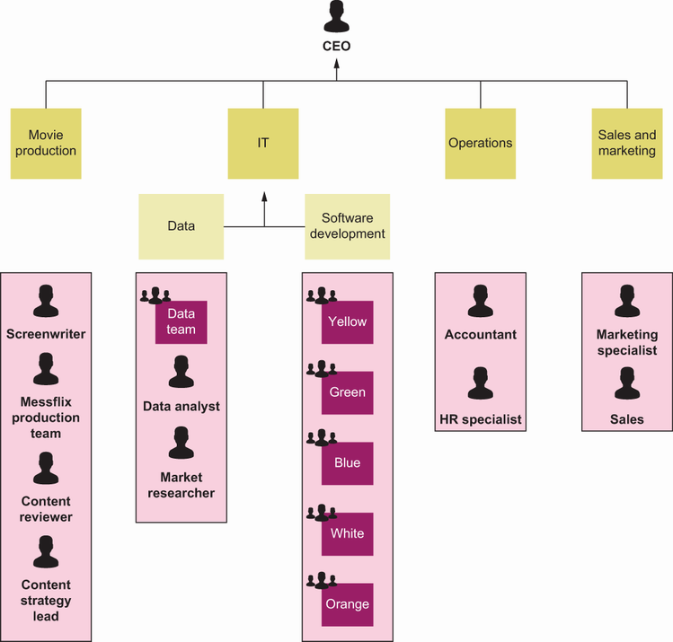
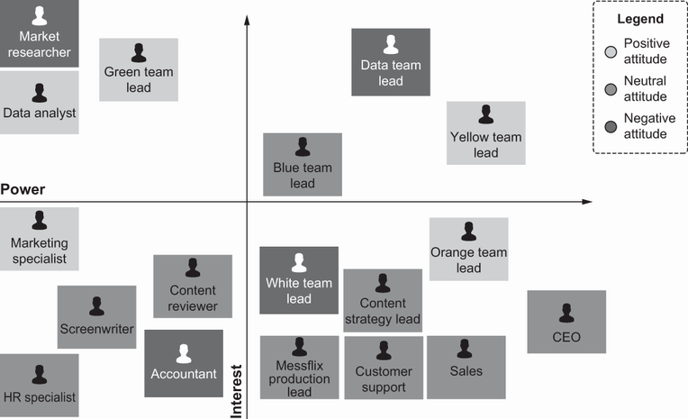
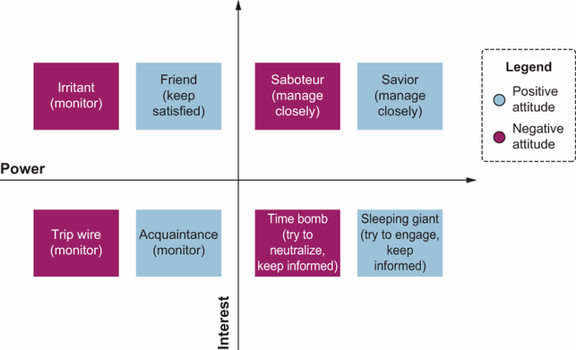
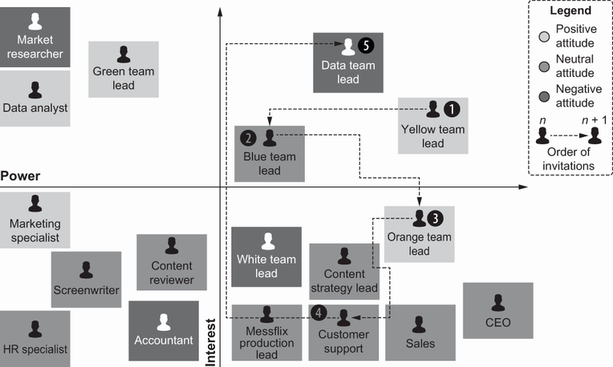
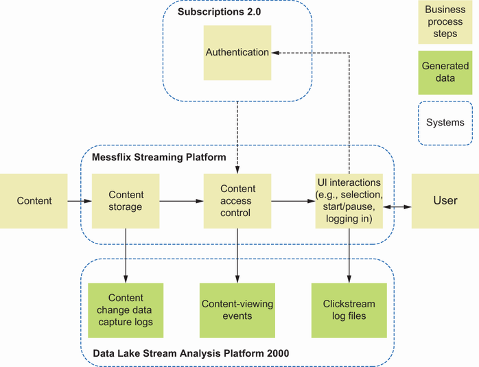
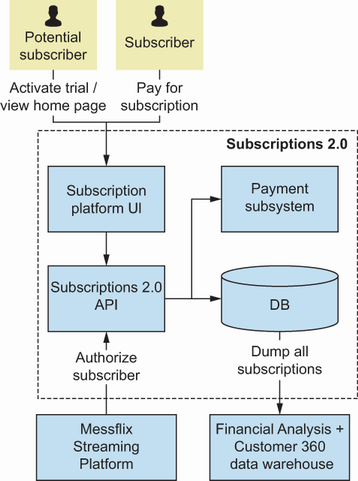
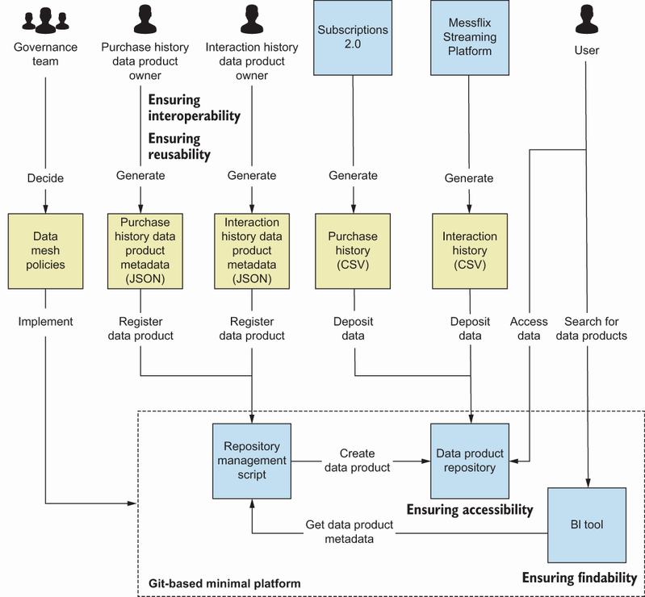

Content Outline
- How to define a focused MVP scope with clear outcomes and short timelines.
- How to map systems, stakeholders, and teams before implementation.
- How to select first domains and datasets for initial data products.
- How to assign ownership, roles, and operational responsibilities.
- How to establish minimum governance for quality and controlled access.
- How to build a minimal platform layer to connect early data products.
S01 - Governance Model
Selecting part of the organization for building the first data products.
Setting up the governance of the data mesh.
S02 - Self-Serve Platform Design
Creating the minimal viable infrastructure as a platform (aka the central platform).
In, the organization learned what a data mesh is and what its elements are. In, teams provided a framework for analysis in terms of whether a data mesh is suitable for the organization and the business.
It may be appropriate to use as a learn-as-the organization-go experience and, following the Messflix alter-ego example, build the data mesh minimal viable infrastructure as a platform, constituting an MVP of the data mesh, within a month. The organization’ll learn how to map the organizational environment and select partners.
S03 - Self-Serve Platform Design
The mesh, at its most fundamental, is a graph—in the discrete mathematics understanding of the word. As such, it has two main element categories: nodes and edges.
A data product, in this case, can be perceived as a node. The central platform, offering the capability of connecting two nodes, forms an edge.
The central platform uses the standardized port of the data product. (Some sources use data quantum instead of data product, but as data quantum comes with its own theory and constraints, to keep the definition simple and inclusive, teams intentionally avoid this terminology.).
On the other hand, getting less mathematical and more practical, teams could think of a single data product connected to a self-serve infrastructure as a platform. As long as such a simple setup would add business benefit, it could serve as a helpful example.
If proven to bring a clear business benefit, even such a small data mesh seed may become a prime success story for expanding the data mesh concept within the organization. To illustrate how a data mesh can bring tangible benefits to the organization, teams.
By the end of, the organization will have a firmer grip of data mesh principles, the means for implementing them, and their associated challenges. However, because teams are creating an MVP, the organization will learn to achieve success using as few resources as possible and with only.
S04 - Business Case and Drivers
Before starting the project, the organization need tools to navigate through the organizational and infrastructural landscape present in the company. To succeed with the tight MVP deadline, It is necessary to identify the path of least resistance while not forgetting about the need to add value.
It may be appropriate to use the following examples as templates, allowing efficient mapping of the environment of the project.
S05 - Systems and Whiteboard
As a chief architect at Messflix, the first instinct is to put pen to paper (or a sticky note to a whiteboard) and map the company’s systems, actors, and development team.
The organization will notice that, remaining loyal to the Messflix name, the current setup is rather complicated. That’s one of the reasons a data mesh may just be the tool required to untangle this mess.
The organization take the following four steps to develop a system and development team landscape diagram.
The organization start with whitespace (whiteboard, piece of paper, or digital whiteboard) and place the internal IT systems and the external systems used by users or internal systems.
The organization add all the other actors interacting with systems to the working space.
The organization order the system and user indicators (sticky notes, shapes) and draw arrows indicating interactions between the collected elements.
The organization decide that to help the organization with the implementation team selection, the landscape needs to be enhanced with an additional element not usually present in such a diagram: the organization add teams responsible for the development and maintenance of all IT systems.
will use this landscape, summarized in, to decide on an MVP environment. Later, will fill in the table as teams discover the pros and cons of engaging each team.
It is worth noting that this exercise requires a lot of information collected from multiple people from different company areas. However, it is also an excellent opportunity to learn who is who, which is the knowledge the organization will utilize in the next step.

S06 - Project and Chart
As Messflix chief architect, the organization’ve been given the organizational chart of the company. The organization use the chart to identify the actors for the system landscape diagram.
This chart is not very helpful for deciding whom It is recommended to cooperate with If the organization want the project to have the desired effect. Because the organization is still new to the company and can’t rely on personal experience, the organization decides to use a popular structured.
definition According to the ISO 21500 standard, a stakeholder is a “person, group, or organization that has interests in, or can affect, be affected by, or perceive itself to be affected by, any aspect of the project.” It is crucial to note that even.
The idea behind stakeholder analysis is to identify stakeholders and their relation to the project so It is possible to strategize how to maximize the positive effect on them and minimize their hindering effect on the project wherever applicable.
This exercise is next to impossible to complete on the own, assuming that the organization is working in a socio-technically complex environment. The direct stakeholders and contacts may have other stakeholders and constraints It may be appropriate to not be aware of.
Ruth Murray-Webster and Peter Simon, in “Making Sense of Stakeholder Mapping” ( http://mng.bz/aJ2B ), propose a stakeholder mapping framework that’s perfectly applicable to the needs. It’s based on evaluating stakeholders according to three main criteria: power, interest, and attitude, and then mapping their position.
The stakeholder’s place on the matrix defines their category. Different stakeholder categories have different advised ways of interaction.
Power is defined as the ability to direct or influence the organization.
The middle manager of a team of five has less power in the organization than the C-level executive. However, someone who weekly plays golf with the CEO may have more actual power than that person’s position in the organizational chart would suggest.
Interest is defined as the stakeholder’s level of active engagement in the project.
The chief data or information officer in the company holds a lot of power over the long-term future of the data mesh initiative. Therefore, the CDO/CIO might voice considerable interest and be willing to support the data mesh approach after it has been proven.
Attitude is defined as the expected type of engagement in the project: supporting, resisting, or remaining neutral toward it.
This criterion goes beyond the apparent feeling of positivity or negativity toward the initiative. For example, someone may feel positive about a data mesh per se but compete with the organization for resources, because they may be implementing a noncompatible solution.
With those criteria in mind, the organization position each Messflix data mesh stakeholder’s power and interest on a scale and indicate their attitude toward the project by assigning each a color. The organization end up with the matrix presented in.
The first glance reveals a vital conclusion: most people don’t care about the data mesh. As teams just mentioned, Murray-Webster and Simon suggest interaction patterns with various stakeholders, depending on their position within the matrix.
The top-right quadrant is the primary focus. The saviors should be well informed about the progress and, if possible, involved in the activities (e.g., as members of the governance body, described in ).
On the opposite spectrum, trip wires and, surprisingly, acquaintances should be intentionally avoided to avert losing energy on managing their involvement. Monitoring that their position on the map hasn’t changed should suffice.
The friends and sleeping giants may become the assets if appropriately engaged. Securing their involvement will strengthen the project.
Armed with a system landscape diagram and the stakeholder map, the organization’re ready to plan the project. In the next step, the organization will learn to decide which team members It is recommended to partner with.



S07 - Governance Model
Teams have said a couple of times already that the success will depend on choosing the right people for the right job. examines consider the qualities It is recommended to look for in the development and governance teams.
S08 - Already and Have
The ideal situation would be to identify a team that has data already well documented and organized with consumers in mind. This might have come through the necessity of already serving their data for further downstream consumption.
If the team’s data meets these criteria, try to learn about the team itself, particularly its inner dynamic. It is possible to talk to team members or their stakeholders.
The team members selected must have a good track record and be on top of their schedules. Again, a discussion with their stakeholders should allow the organization to get this metric.
Knowing what the perfect team looks like is one thing. Making do is another.
- Long-term perspective In the future, beyond the first month, will this team member be an ally and a great example in the quest to introduce the data mesh to the rest of the company?
Look at the stakeholder map: the Yellow team is the savior, and with its high interest and power, fulfills this criterion for sure. The Orange team’s power and Green team’s interest should also suffice if other factors analyzed later will position them as potential.
- Immediate perspective Will the data mesh add value by solving this team member’s pressing problems (e.g., data access or interoperability problems)?
If the organization has such knowledge, use it to the advantage. As a new employee, however, It may be appropriate to not have this luxury.
S09 - Work and Focused
Is their work focused on a single business domain?
Is their data organized enough to need just a bit of focused work to expose it in the form of a data product?
S10 - Criterion and Selection
To consider the third criterion, It is necessary to look closer at and examine systems developed by the three teams meeting criterion 1 (because the organization’re not equipped to narrow the selection by using criterion 2). summarizes the selection criteria.
In the Messflix position, as a first approximation, the organization decides to develop MVP around the project involving the Yellow or Green teams first.
S11 - Cooperation and Temporarily
Having two teams, Yellow and Green, to potentially cooperate with, It is necessary to consider structuring the project and selecting a cooperation model. The three basic cooperation models for such projects are as follows.
Select a single team responsible for all datasets the organization plan to turn into data products.
Create a cross-functional team, temporarily connecting members of multiple teams under the lead (the organization would serve as a team leader, but the team members would work in the team temporarily).
Coordinate work of multiple teams (the organization serve as a facilitator to other team leaders).
In the Messflix environment, the Green team is a bit more agile and willing to take risks, but the Yellow team offers more maturity and experience. Therefore, Green and Yellow team leaders advise that the organization leave the team management to them, focusing on coordinating.
In the meantime, because data governance is one of data mesh’s principles, the organization shouldn’t forget one more essential human-factor-oriented exercise: forming the data governance team.
S12 - Governance Model
If the organization already has a data governance body, It is recommended to probably start there! Building a parallel reality may lead to confusion, contradictory policies, and a plethora of problems.
S13 - Governance Model
A data governance team is a group of people who will decide on data-related policies. They’ll have to make decisions, driving the data products’ design into interoperability with existing systems and with each other.
The organization want people who understand the data journey, from data generation/acquisition to its actual business use. Therefore, it’s of paramount importance to include stakeholders from multiple areas of the organization—from IT to affected business departments to management.
All that is no more than four or five people. Fewer participants create the perception that the governance is overly centralized (teams do the best to avoid words like dictatorship ), and more would be impractical to coordinate.
S14 - Stakeholders and Lead
Teams would like to start with the organization stopping for a second and resetting the thinking about the teams and their roles in implementing the MVP.
Initially, the focus will be on the top-right quadrant, representing stakeholders with significant power within the organization and high interest in the project. Residents of this quadrant in the stakeholders’ map require close management.
In the Messflix stakeholder analysis, the organization identified the Data team lead, Yellow team lead, and Blue team lead as top-priority stakeholders. Please note that during this exercise, teams do not care about the systems owned by stakeholders!
Now, a bit of practical advice. The order of invitation matters.

S15 - Lead and Implementation
The organization start with the Yellow team lead. She already agreed to work with the organization on MVP implementation, so there are two arguments for starting with her.
The Blue team lead expresses above-average interest in the project, but previously his attitude wasn’t positive enough for the organization to risk inviting him to the implementation team. However, the Yellow team lead’s relative power helps the organization build credibility, so It is possible to try to engage.
Two down. The last stakeholder in the top-interest quadrant is the Data team lead.
The Orange team lead holds a lot of power, and his attitude is positive. Unfortunately, his team is too overworked to participate in the MVP implementation.
Neither the Yellow nor Green team’s systems have direct users from the business side. However, the Blue team has contact with three of them.
After to-and-fro discussions, the organization identify common ground with Customer Support. That department’s representative ensures that the data governance team isn’t limited to the IT world.
Job well done? Can teams get to work?
As the last step, the organization invited the Data team lead. The collective power of the data governance team is now too great for him to ignore the invitation.
With that, the organization finish the governance team selection.
the organization’ve thought about how to identify the best candidates for the initial implementation team (and learned that it’s a chicken-and-egg type of problem, with IT teams in the role of the chickens, IT systems and datasets in the role of the.
All of this will make the implementation process for data mesh much smoother, but the right implementation team still needs materials to work with. So, reviews how to design and implement the building blocks of the data mesh: the data products.
S16 - Governance Model
It could seem that setting up governance is the least of the problems and that it could wait for all the important (technical) solutions related to the central platform to be in place or data products to be developed. But that’s not exactly true.
Neither the platform nor data products the organization will develop at the MVP stage are likely to last, but the governing body will, at least in some capacity. The organization’ve chosen the data governance team members for their experience and influence.
What It is possible to and will do is clearly state the purpose of the data governance team. To lay the cornerstone of data mesh data governance, this team will achieve two goals within the MVP span.
To develop a value statement related to data governance policies and rules (presents the definition of a value statement in ).
S17 - Governance Model
Depending on the composition of the data governance team, It may be appropriate to decide that other goals are more relevant to the project. If so, in, teams suggest decisions that could be channeled to different central governance bodies.
At Messflix, the organization decides to follow the two primary goals teams’ve presented. The first one provides a good base for a long-lasting data mesh effect, and the second makes the selection of technologies behind the central platform and data products easier.
S18 - Governance Model
- The first goal of the governance body defining value statements—is not technical; it is vital nevertheless. It not only sets the tone for the data mesh but also may bring new quality to data governance in the company even If the organization decides to pursue another.
What is a value statement? Many equally good definitions exist.
Robert S. Seiner, in Non-Invasive Data Governance (Technics Publications, 2014), presents a general structure of a value statement as follows.
Organizations that [take some action] demonstrate [business value improvement].
What is the added value of a value statement? Isn’t it just a buzzword?
It may be appropriate to ask, “Isn’t it enough that teams choose more efficient technical solutions? Why do it is necessary to waste time discussing value statements?” The organization just made a value statement.
Companies that simply choose more-efficient technical solutions demonstrate less time wasted on buzzwords.
S19 - Value and However
However, in the MVP, It may be appropriate to want to test the value statement against business reality. Is the efficiency of IT solutions the most important value in the organization?
Teams’re not saying that all of these contradict each other. Teams’re just noticing that in some cases, they might.
That is the role of data value statements: to serve as the final word when in doubt. They won’t affect the lives as often as the selection of this or that technology stack—just as seatbelts do not save the life every day.
S20 - Governance Model
Deepening understanding of the data mesh within the governance body.
Providing a clear understanding of the data governance team’s expectations from the data mesh (even if they won’t end up in a final value statement list).
Defined value statements themselves are a powerful tool too. First, they allow the organization to discover organizational-level value added by data mesh development.
At Messflix, the governance team has a long debate on the value statement. The team members list key areas of their operations as follows.
S21 - Governance Model
Organizations that put effort into using data to improve their understanding of their customers demonstrate a higher return on data investments.
With this focal point in place, they begin to think about how to align their business processes to reflect this value statement. Policies are the best tools to shape business processes at any governance body’s disposal, so reviews how they work in practice.
S22 - Governance Model
The list of all potential policies and aspects they may govern is long and never exhaustive. Trying to define and execute all of them may lead to a highly inflexible environment and is not advised.
However, focusing on just the technical aspects of the data mesh and leaving data governance policies out of the MVP would be a mistake, as would be treating them offhandedly. Teams touched on this topic ’s introduction.
On the other hand, If the organization invite senior management to participate, the organization shouldn’t expect them to spend their time deciding minor details. Make sure that the meeting agenda focuses on problems requiring policy-level solutions.
tip Pick the battles wisely! The role of the MVP governance team is not to create a parallel universe but to shape business processes in a way that ensures the company is moving toward its goals.
In the discussion with the Messflix data governance team, the organization decides on an overarching policy that the data introduced to the data mesh will be FAIR. The data governance team agrees with all FAIR principles, as defined by Mark D.
- Findability The requirement for (meta)data to be assigned a globally unique and persistent identifier and to be registered and indexed in a searchable resource.
- Accessibility The requirement for (meta)data to be retrievable by its identifier, using a standardized communications protocol and the protocol to allow for an authentication and authorization procedure, where necessary.
Ultimately, the first policies adopted in the organization will be the data governance team’s decision and will depend on their value statements.
S23 - Governance Model
Teams shouldn’t forget that data governance in a data mesh will be federated. presents a list of critical elements that may be considered when deciding on the governance authority and split of responsibilities.
As usual, there is no silver-bullet solution. However, depending on the situation, some decisions can be made centrally or locally, depending on the organization’s needs.
At Messflix, the organization has created the data governance team operating at the central level, defined the value statement, and specified policies to be respected by data product owners. The technicalities of policy implementation will depend on data product owners, whom the organization will appoint only after.
S24 - Governance Model
With the Messflix implementation teams selected and the data governance team’s decision on governance principles, it is high time for the organization to start work on data products. To do that, It is necessary to do the following.
Appoint data product owners.
S25 - Prepare and Product
Prepare data product searchable descriptions.
Expose the data in a controlled manner.
walks through each of these steps and identifies techniques for effective execution.
S26 - Data Product Interfaces
At the MVP stage, to select datasets to be exposed in the form of data products, It is recommended to identify data already fulfilling or close to fulfilling the minimal data product requirements. The heuristics for the selection of a suitable dataset can be based on.
It’s focused on a single domain.
It’s richly described with metadata.
It has clearly defined access ports.
To improve the business impact of data product candidate selection, It is possible to add more criteria. For example, It may be appropriate to decide to focus on adding value to the MVP by selecting, for example, systems regularly exposing the data for use by other systems or datasets.
definition A domain in domain-driven design, which is conceptually closely related to a data mesh, is defined simply as an area of interest. For now, think of domains as cohesive business areas.
As Messflix chief architect, the organization started with selecting the teams to cooperate. The organization assumed the organization want to proceed with the Yellow and Green teams responsible for the Messflix Streaming Platform and Subscriptions 2.0 systems, respectively.
Suppose while implementing the data mesh in the organization, the choices are overly limited in terms of initially identified teams and datasets. In that case, It may be appropriate to need to pause and get a more detailed map of all datasets available for a bigger picture.
The organization will need such a map at some point, but at this stage, when time is of the essence, It may be appropriate to as well start with datasets generated by the selected teams. If they fulfill the requirements, the organization will save time by not analyzing all.
The full details of the process leading to the design of domain-oriented data products are described in. presents a simplified method for discovering the datasets consistent with the domain(s) the organization selected as a training ground.
reviews how cohesive the systems are that are operated by the teams the organization want to work with.
The Yellow team’s responsibility is the Messflix Streaming Platform, serving the purpose of distributing content generated by Messflix. First, reviews how the content distribution business process aligns with the Messflix Streaming Platform datasets.
To quickly analyze a business process, try to depict it using big blocks representing input, output, and actions leading to another. Next, try to add the data generated at each step.
The Messflix Streaming Platform data, even though it’s generated in the context of the content distribution process, is transferred to Data Lake Stream Analysis Platform 2000, managed by the Data team, which claims it belongs to their analytical processes.
Subscriptions 2.0 is a relatively small system focused on simple functionality, so the organization decides to draw its container diagram rather than a business process. depicts the result.
All the logs are sent to the Financial + Customer 360 Analysis data warehouse, also managed by the Data team.
Now, consider the data captured by systems in the company. Is it, or could it be, used in any other domain?
Identification of domain-oriented datasets is often an iterative process. Think of walking through a graph of business processes, trying to identify the edge between nodes of business processes composed of linked data.


S27 - Necessary and Decide
It is necessary to decide the purpose of the data mesh the organization developed, who will use it, and what added value it will offer them. At the core of the data mesh is its ability to connect otherwise distributed data products.
Which of the stakeholders put the most emphasis on connecting previously separate data? What are the goals that the stakeholder wants to achieve?
S28 - Self-Serve Platform Design
- Development of new data products Through generating feature vectors for ML, offering processed views of cross-domain data, or modeling cross-domain processes.
TIP The data mesh is not just an IT solution. Work with the business!
reviews the utilization of data generated by systems that the organization want to work within Messflix. At first glance, both Messflix Streaming Platform and Subscriptions 2.0 data are dealt with well enough.
Maybe. Full utilization of data potential requires close collaboration among data engineering, data science, and business teams.
Unfortunately, Messflix doesn’t have such luck. The lack of an interface allowing simultaneous access to data from the Data Lake Stream Analysis Platform 2000 and Financial Analysis + Customer 360 data warehouse should be considered a huge red flag.
examines quickly go through an example of what a business benefit search can look like. The area that often struggles with access to well-defined data is ML.
A quick discussion with Customer Support staff reveals that Messflix is half-blind in its churn control, relying purely on customers’ average lifetime. Churn, given the continuous interaction with the customer, is relatively straightforward to predict.
As an ML enthusiast, the organization also realize that the feature vector used for prediction should be enhanced with the customer purchase history generated by Subscriptions 2.0. After consideration, the organization decides that the Green team will be tasked with developing a data product exposing required.
S29 - Data Product Ownership
When the organization selected purchase history and clickstream logs as two candidate datasets, the organization needed a data product owner for each of them to turn them into data products. Fortunately, both the Yellow team lead and Green team lead accepted the proposition of extending their.
Now, why did the organization ask them? To prove the approach’s feasibility, It is necessary to connect two separate dots of data products.
The data product owner may or may not be the product owner of the underlying system; however, at the MVP level, less is more, so teams advise asking current system product owners, who will join the implementation team, to take on additional responsibilities.
However, think it through and make that decision consciously. Depending on other factors, sometimes it’s better to choose someone else.
S30 - Governance Model
Adhering to policies decided by the data governance team.
Envisioning the final form of the data product (e.g., metadata documentation, data models, access ports).
Closely cooperating with the business to ensure the completeness and clarity of collected data.
Identifying and understanding the needs of the data product users and how to answer them with the domain’s data.
Now that everything is prepared, teams will start creating the first data products. Because they are minimalistic, teams will focus on two primary aspects.
S31 - Data Product Ownership
The organization has selected systems that will form the first Messflix data products and have chosen a data product owner for each of them. However, to satisfy the policy of making the data products FAIR, It is necessary to pay close attention to metadata related the.
Each data product, like any other product, needs to be packaged in a way that will allow users actually to use it. This means adding the self-described feature to the product, as mentioned in.
Take a moment to consider how the organization learn about products the organization buy every day, like groceries, electronics, and home appliances. Hopefully, they are packaged in a way that tells the organization everything It is necessary to know in order to use them.
It is necessary to replicate that experience with the data product. Again teams will take some shortcuts here.
Looking closer at the table, the organization will discover that it tries to answer three main questions. The FAIR principles require answering two of them, and one relates to business value.
What is the data product? explains what data is inside, its origin, related business cases, structure, etc.
How do teams access the data product? Teams provide technical guidance on getting access to the raw data, credentials, URLs, technologies, etc.
How does the data product fit into the organization? Who’s responsible for it, how can the organization contact them, where within the organization is it located, how do the organization get tech support, etc.
Reuse as much as possible from the project’s existing documentation. This might be the case for logical and physical data models.
Gathering all that information in one place, maybe in the form of a table, is the simplest way of educating the clients about the data product. So feel free to use that template (appendix A) and fill it with the data products’ information.
For Messflix purposes, to make the description suitable for automated governance needs, It is necessary to ask data product owners to transform this description into JavaScript Object Notation (JSON) format. Then, they can use it to register their data product in the central platform.
Data product owners also take on the responsibility of aligning their data products’ data models and metadata vocabulary. Ensuring data interoperability and reusability is one of the policies they are required to adhere to, but the choice of tools is left to their discretion.
S32 - Self-Serve Platform Design
As the organization learned earlier, the purchase history data from the Subscriptions 2.0 system and the clickstream history data from Messflix Streaming Platform are sent directly to their respective analytical systems. Unfortunately, the development of the full-blown systems for exposing the data exceeds the timeline.
explains the selection of Git in a bit more detail. Teams show there that it offers mechanisms allowing it to serve as a provisional central platform.
S33 - Users and Perspective
From the users’ perspective, what is the most common way they consume the data in bulk? A data warehouse or data lake?
With what technologies are the teams proficient? Are they experts in writing web applications or microservices and exposing data as RESTful APIs?
Is it possible to offload hosting and upkeep? Certainly, in the company, tools and platforms are bundled with support.
Naturally, the organization’d like to please the users first. However, remember that the organization is under time pressure here.
The significant differentiation is that the data product focuses on the external users’ consumption perspective, not the source system logic. This means that the organization is not expected to give users access to the internal storage of the source system.
TIP Teams encourage the organization not to lose time overengineering and overthinking the MVP early on. Keep things simple and grounded in the team’s experience and in-house services.
With the first data products developed, teams’re ready to talk about connecting them into an actual data mesh.
S34 - Data Lineage
The self-serve infrastructure as a platform as an element of the data mesh will help the teams with various data-related tasks, including standardization and lineage, quality metrics, and monitoring logging and alerting. It’s impossible to get all these tasks done within the scope of.
At Messflix, the organization decides to start with Git as a solution that will store CSV files containing purchase history and content interaction history generated by Subscriptions 2.0 and Messflix Streaming Platform. The solution the organization design is depicted in.
reviews if It is possible to make the minimal platform connect the data products, allowing automated policy enforcement.

S35 - Governance Model
The property it is necessary to consider is the ability to implement automated enforcement of policies and rules imposed on the data mesh by the Messflix data governance team. Platform properties like flexibility, resilience, and automation are not less important; however, the organization decides that they.
The general policy is to adhere to FAIR data standards. However, to ensure implementation feasibility, the MVP is supposed to provide just a subset of them, as described in.
Using the Messflix Git repository offers an excellent opportunity to fulfill data mesh requirements with a minimal workload to prepare the solution.
Whenever the Yellow or Green team leads, as data product owners, want to add or modify their data products, they first have to submit a JSON-formatted data product description. Then, the resource management script developed and maintained by the Yellow team automatically validates all.
Findability of the data stored in data products can be achieved by deploying a simple BI tool, storing the provided metadata in a Structured Query Language (SQL) table, and making it searchable by users.
This way, the platform ensures the accessibility and findability of data products. For example, there are ways to automatically check that two submitted datasets do not contain columns with identical data, supporting automation of enforcing interoperability and reusability.
S36 - Access and Sensitive
At Messflix, the situation is relatively simple. Git ensures accessibility to the files to anyone with the necessary access rights.
This step optimally should be planned and executed in coordination with the cybersecurity team. If the organization took the earlier advice and avoided working with the most sensitive data, the data products should not be under too much scrutiny.
The exact structure and granularity of access control could be modeled on the basis of the following.
The nature of the data offered in the data products (e.g., open, internal, confidential, sensitive, PII related).
The ways the data is planned to be used, or can be used for misuse, for modeling and anomaly detection.
S37 - Security and Privacy
- Who is accessing data Based on the role defined in a corporate directory.
- How they will identify themselves Following the rule of the thumb regarding maximizing the reusability of existing solutions, utilizing authentication solutions implemented in the company will be the preferred way.
- What they are allowed to do with data For maximum security, the system should follow the principle of least privilege (unless otherwise specified, a role will be assigned the least amount of access possible to a system).
Where they are accessing the data from if forced to work with sensitive data —For example, It may be appropriate to want to change permissions depending on IP addresses allowed to access a given data product or limit virtual private network (VPN) users to read-only access.
- When they access data It is possible to set up yet another maximum security setting, limiting suspicious connections, or simplify control of temporary staff access, for example.
- Why they access data To reduce the effects of stolen credentials or phishing attacks, It may be appropriate to limit the allowed actions of users based on their role.
Depending on the previous list, and the technology the organization will use to store the data products, It may be appropriate to restrict access to data at five granularity levels.
S38 - Dataset and Table
Dataset ( table, file, etc.).
Record (row, files, created in a given time frame).
S39 - Self-Serve Platform Design
The task of ensuring platform security may seem daunting, but remember: there are solutions to take the burden of the work from the shoulders. Involve the security team early in the MVP design phase and, hopefully, the organization will have a massive part of this work.
S40 - Business Case and Drivers
Preparing for data mesh MVP development starts with mapping existing systems and stakeholders. Connect the MVP with a business case.
Selecting proper implementation teams, both for software development and data governance, is extremely important. Think about what operational and cooperation models will ensure effective collaboration.
Implement all or a subset of data mesh elements required to achieve the business goal. The critical factor is ensuring the decentralization of responsibility for data.
Ensure that the governance structure covers all critical elements from the beginning. The selection of strategic elements like value statements or policies to be designed by the governance body will depend on the business case.
A data mesh MVP, like a fully blown data mesh, is not just a technical exercise. It’s the development of a socio- technological solution.
S41 - Right
2 Is a data mesh right for the organization?
Key takeaways
- How to define a focused MVP scope with clear outcomes and short timelines.
- How to map systems, stakeholders, and teams before implementation.
- How to select first domains and datasets for initial data products.
- How to assign ownership, roles, and operational responsibilities.